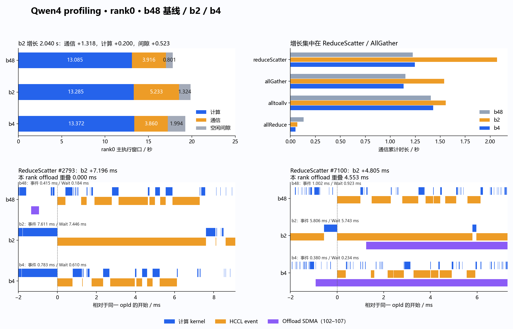

rank0：b2 通信增长与算子对比
数据采集：2026-11-19；分析：2026-11-20。只读取 b48 / b2 / b4 的 rank0，未运行 NPU 实验、未修改模型源码。
相对 b48，主执行窗口 +2.040 s，其中通信 +1.318 s（64.6%），计算 +0.200 s（9.8%），空闲间隙 +0.523 s（25.6%）。通信增量中 Wait +1.206 s（91.5%）、Transit +0.098 s（7.4%）、Idle +0.014 s（1.1%）。存在传输竞争迹象，但不能将全部增量归因于某一方向的搬运；load 与 save 必须合并考虑。
1. 比较口径
b48 是 48 个 shared buffer 的 offload 基线；b2 / b4 分别为 2 / 4 个。三组请求 prompt SHA-256、131072 输入 token / 1 输出 token / 0 cached token 均一致；均使用 TP8 / EP8、8192 配置上限的 chunked prefill。每组计算 kernel 90136 个、135 种，HCCL collective 7200 个；计算算子名与次数完全一致，通信按 opId 和类型逐个对齐。因此不需要通过除以请求数估算增长。b48 仍启用 offload，此处不是与关闭 offload 的 HBM profiling 比较。
Stage 使用主计算 stream 45 的首尾边界，结果逐项对照 step_trace_time.csv，通过误差 <2 μs 的断言。CPU scope 通过 TASK / COMMUNICATION_OP → CONNECTION_IDS → PYTORCH_API 关联，避免把异步 CPU scope 的墙钟时长当作设备 kernel 时长。8 个计算 kernel 缺少 PyTorch 关联；其耗时仍计入算子总表，MoE scope 汇总为近似归属。

局部图按同一 opId 对齐开始，三行分别为计算、HCCL、offload SDMA。所有行都是 rank0；无本 rank 搬运重叠不排除其他 rank 的影响。
| 指标（秒） | b48 | b2 | b4 | b2 − b48 |
|---|---|---|---|---|
| stage_s | 17.801831 | 19.841829 | 19.226519 | +2.039997 |
| compute_s | 13.085010 | 13.284861 | 13.371586 | +0.199851 |
| communication_s | 3.915735 | 5.233331 | 3.860490 | +1.317596 |
| free_s | 0.801086 | 1.323637 | 1.994443 | +0.522551 |
| offload_sdma_union_s | 0.160606 | 2.039658 | 1.899499 | +1.879053 |
| offload_sdma_summed_s | 0.160606 | 6.209011 | 5.718148 | +6.048405 |
| moe_compute_s | 1.127216 | 1.127253 | 1.125506 | +0.000037 |
2. 通信增长发生在哪
ReduceScatter 增长 844.415 ms（+68.9%），AllGather +386.348 ms（+33.5%），AllToAllv +148.654 ms（+10.6%）；AllReduce 下降 61.821 ms。ReduceScatter 与 AllGather 合计解释 93.4% 的净通信增长。
| 算子 / 位置 | 次数 b48 / b2 / b4 | b48 (ms) | b2 (ms) | b2 增长 (ms) | b2 增长 % | b4 (ms) | b4 增长 (ms) |
|---|---|---|---|---|---|---|---|
| hcom_reduceScatter_ | 1782 / 1782 / 1782 | 1,225.348 | 2,069.763 | 844.415 | +68.91% | 1,246.536 | 21.187 |
| hcom_allGather_ | 2754 / 2754 / 2754 | 1,151.835 | 1,538.183 | 386.348 | +33.54% | 1,132.106 | -19.729 |
| hcom_alltoallv_ | 2628 / 2628 / 2628 | 1,406.996 | 1,555.650 | 148.654 | +10.57% | 1,430.280 | 23.283 |
| hcom_allReduce_ | 36 / 36 / 36 | 131.556 | 69.735 | -61.821 | -46.99% | 51.569 | -79.987 |
最突出的设备相邻序列：MatMulV2 → ReduceScatter → _hc_combine_norm_kernel 增加 657.869 ms；QuantMatmul → ReduceScatter → _hc_combine_norm_kernel 增加 142.276 ms。按 CPU scope 的前后关系，主要落在 attention 输出之后、进入 MoE 之前的归并阶段。以下按关联 scope 细分，after 表示该 scope 已返回，不表示设备已同步完成。
| 算子 / 位置 | 次数 b48 / b2 / b4 | b48 (ms) | b2 (ms) | b2 增长 (ms) | b2 增长 % | b4 (ms) | b4 增长 (ms) |
|---|---|---|---|---|---|---|---|
| hcom_reduceScatter_ | after vllm::qwen_gdn_attention_core | 647 / 647 / 647 | 756.838 | 1,404.019 | 647.181 | +85.51% | 728.625 | -28.213 |
| hcom_allGather_ | after vllm::moe_forward_shared | 989 / 989 / 989 | 402.575 | 657.148 | 254.573 | +63.24% | 480.759 | 78.184 |
| hcom_reduceScatter_ | after vllm::qwen4_exp_qsa_prepare_with_output | 234 / 234 / 234 | 171.231 | 323.825 | 152.593 | +89.12% | 192.728 | 21.496 |
| hcom_alltoallv_ | vllm::moe_forward_shared | 2628 / 2628 / 2628 | 1,406.996 | 1,555.650 | 148.654 | +10.57% | 1,430.280 | 23.283 |
| hcom_allGather_ | vllm::moe_forward_shared | 1764 / 1764 / 1764 | 749.056 | 880.829 | 131.773 | +17.59% | 651.093 | -97.962 |
| hcom_reduceScatter_ | vllm::moe_forward_shared | 882 / 882 / 882 | 258.900 | 333.982 | 75.082 | +29.00% | 309.437 | 50.537 |
| hcom_reduceScatter_ | before_first_moe | 1 / 1 / 1 | 1.820 | 2.191 | 0.371 | +20.38% | 0.406 | -1.414 |
| hcom_allGather_ | before_first_moe | 1 / 1 / 1 | 0.205 | 0.206 | 0.002 | +0.86% | 0.254 | 0.050 |
| hcom_allReduce_ | before_first_moe | 1 / 1 / 1 | 7.824 | 1.047 | -6.777 | -86.62% | 0.930 | -6.894 |
| hcom_reduceScatter_ | after vllm::moe_forward_shared | 18 / 18 / 18 | 36.559 | 5.747 | -30.812 | -84.28% | 15.340 | -21.218 |
| hcom_allReduce_ | after vllm::moe_forward_shared | 35 / 35 / 35 | 123.732 | 68.688 | -55.044 | -44.49% | 50.639 | -73.093 |
查看设备相邻算子组合的全部增长
| 算子 / 位置 | 次数 b48 / b2 / b4 | b48 (ms) | b2 (ms) | b2 增长 (ms) | b2 增长 % | b4 (ms) | b4 增长 (ms) |
|---|---|---|---|---|---|---|---|
| hcom_reduceScatter_ | aclnnMatmul_MatMulCommon_MatMulV2 | _hc_combine_norm_kernel | 666 / 666 / 666 | 770.532 | 1,428.401 | 657.869 | +85.38% | 740.951 | -29.580 |
| hcom_allGather_ | _hc_gate_mix_kernel | aclnnMatmul_MatMulV3Common_MatMulV3 | 629 / 629 / 629 | 219.059 | 384.400 | 165.342 | +75.48% | 284.602 | 65.543 |
| hcom_reduceScatter_ | aclnnQuantMatmulWeightNz_QuantBatchMatmulV3_QuantBatchMatmulV3 | _hc_combine_norm_kernel | 216 / 216 / 216 | 159.358 | 301.634 | 142.276 | +89.28% | 180.807 | 21.449 |
| hcom_allGather_ | aclnnReduceSum_ReduceSumOpAiCore_ReduceSum | aclnnReduceSum_SliceAiCore_Slice | 882 / 882 / 882 | 489.198 | 587.581 | 98.384 | +20.11% | 359.481 | -129.717 |
| hcom_reduceScatter_ | aclnnMul_MulAiCore_Mul | aclnnForeachAddListV2_ForeachAddListV2_ForeachAddList | 882 / 882 / 882 | 258.900 | 333.982 | 75.082 | +29.00% | 309.437 | 50.537 |
| hcom_alltoallv_ | aclnnDynamicQuantV2_DynamicQuant_DynamicQuant | aclnnMoeInitRoutingV3_MoeInitRoutingV3_MoeInitRoutingV3 | 1728 / 1728 / 1728 | 719.139 | 793.169 | 74.030 | +10.29% | 712.117 | -7.022 |
| hcom_alltoallv_ | MoeTokenUnpermute | aclnnInplaceCopy_CastAiCore_Cast | 882 / 882 / 882 | 674.904 | 748.137 | 73.233 | +10.85% | 706.666 | 31.762 |
| hcom_allGather_ | _hc_gate_mix_kernel | aclnnDynamicQuantV2_DynamicQuant_DynamicQuant | 216 / 216 / 216 | 85.954 | 156.984 | 71.030 | +82.64% | 102.846 | 16.892 |
| hcom_allGather_ | MoeTokenUnpermute | aclnnMatmul_MatMulCommon_MatMulV2 | 882 / 882 / 882 | 259.858 | 293.247 | 33.389 | +12.85% | 291.613 | 31.755 |
| hcom_allReduce_ | aclnnInplaceMaskedFillScalar_MaskedFillAiCore_MaskedFill | GemmaRmsNorm | 18 / 18 / 18 | 37.427 | 51.821 | 14.394 | +38.46% | 36.736 | -0.692 |
| hcom_allGather_ | _hc_gate_mix_kernel | aclnnMatmul_MatMulCommon_MatMulV2 | 37 / 37 / 37 | 28.713 | 36.624 | 7.912 | +27.55% | 18.567 | -10.146 |
| hcom_allGather_ | aclnnCat_ConcatD_ConcatD | aclnnInplaceCopy_SliceAiCore_Slice | 18 / 18 / 18 | 18.504 | 23.855 | 5.351 | +28.92% | 23.372 | 4.868 |
| hcom_allGather_ | aclnnCat_ConcatD_ConcatD | aclnnInplaceFillScalar_FillAiCore_Fill | 18 / 18 / 18 | 19.367 | 23.432 | 4.065 | +20.99% | 19.447 | 0.080 |
| hcom_alltoallv_ | MoeTokenPermute | MoeTokenPermute | 18 / 18 / 18 | 12.953 | 14.345 | 1.391 | +10.74% | 11.497 | -1.457 |
| hcom_allGather_ | _ple_gate_kernel | aclnnInplaceZero_ZerosLikeAiCore_ZerosLike | 18 / 18 / 18 | 12.853 | 13.612 | 0.758 | +5.90% | 12.961 | 0.108 |
| hcom_allGather_ | aclnnMatmul_MatMulCommon_MatMulV2 | aclnnInplaceCopy_TransposeAiCore_Transpose | 36 / 36 / 36 | 16.668 | 16.940 | 0.271 | +1.63% | 16.613 | -0.055 |
| hcom_allGather_ | aclnnMatmul_MatMulCommon_MatMulV2 | aclnnIndex_IndexCheck_IndexCheck | 18 / 18 / 18 | 1.661 | 1.508 | -0.154 | -9.25% | 2.605 | 0.943 |
| hcom_reduceScatter_ | aclnnInplaceCopy_TensorMoveAiCore_TensorMove | aclnnMatmul_MatMulCommon_MatMulV2 | 18 / 18 / 18 | 36.559 | 5.747 | -30.812 | -84.28% | 15.340 | -21.218 |
| hcom_allReduce_ | aclnnInplaceMaskedFillScalar_MaskedFillAiCore_MaskedFill | aclnnRepeat_TileAiCore_Tile | 18 / 18 / 18 | 94.129 | 17.914 | -76.215 | -80.97% | 14.833 | -79.295 |
3. MoE 是否与 load/save 争带宽而被拉长
MoE scope 内的计算 kernel 总时长约 b48 1.127216 s / b2 1.127253 s / b4 1.125506 s，b2 基本不变。核心专家 GroupedMatmul + SwiGLU 从 247.611 → 249.009 ms（+0.56%），down GroupedMatmul 从 110.699 → 110.836 ms（+0.12%）。Permute 从 73.162 → 70.936 ms，Unpermute 从 109.338 → 111.912 ms。MoE 内部通信合计增长约 355.509 ms，其中 AllToAllv +148.654 ms。应当区分 MoE 的计算与内部通信，不能用整个 moe_forward CPU scope 推断专家矩阵计算变慢。
竞争迹象：HCCL 报表各 transport 的累计传输字节在三组一致；按 HCCS 字节 / 累计传输时间加权，AllGather 约 99.11 → 89.54 GB/s（−9.7%），ReduceScatter 94.64 → 82.35 GB/s（−13.0%），AllToAllv 24.09 → 22.73 GB/s（−5.7%）。这些是报告口径下的累计有效速率，不是链路峰值；不同 transport / 链路时间有并行，不能跨 transport 求和当作墙钟时间。
带宽竞争与等待的关系：b4 的 offload SDMA 任务同样是 293590 个，rank0 活跃区间并集 1.899 s（b2 2.040 s），Transit 也增加约 91 ms；但其通信总时长反而减少 55 ms。b2 中有 529.466 ms 的净通信增长发生在与本 rank offload SDMA 没有重叠的 collective 上，占 40.2%；最大单项 AllToAllv #7096 增长 7.613 ms，也没有本 rank offload 搬运重叠。这些现象说明本 rank 搬运重叠无法解释全部等待，却不能排除其他 rank 的 load/save 争用带宽。HCCL Wait 也可能是其他 rank 的回载、保存或计算被拖慢后晚到的结果，因此“Wait 为主”并不等于“带宽无关”。当前只能确认传输阶段略慢、等待被显著放大；两者之间的因果贡献还需区分。
本分析将 stream 102–107 的 SDMA 作为 offload 搬运代理。这些任务没有完整可关联的传输方向与字节数，不能逐条拆出 save(D2H) 和 load(H2D)，也不能把 10 倍任务数等同为 10 倍字节数。6.209 s 是多 stream 时长之和，活跃并集只有 2.040 s，二者均不能直接加到 Stage 上。
3.1 补充 load：回载与 buffer 复用依赖
cached_tokens=0 不代表没有 load。它表示请求没有命中 prefix cache；少量共享 buffer 在层间复用时，先前 prefill chunk 已保存的 KV/状态仍可能需要从 DRAM 回载。保存源码与 runtime-source.tar.gz 内对应文件逐字节一致，确认 _submit_ready_layer_loads 会提交当前层与预取窗口的 load；接收线程先等待前驱 save，随后执行回载，当前 attention 在 wait_for_layer_load 等待其完成。
按每 400 个 collective 的执行周期计数，b48 前 17 个周期各有 1727 个 offload SDMA 任务；b2/b4 两组任务数完全相同，从第 1 周期 3194 个，逐步上升到第 9 周期 15710 个、第 17 周期 28190 个；第 18 周期还有 26556 个。第 17 周期的多 stream 搬运任务时长之和为 b2 621.8 ms / b4 620.0 ms，而通信 Wait 分别为 266.5 / 164.7 ms。这个随上下文增长的搬运压力与回载机制一致，但未记录方向/字节数，不能把其中某条 stream 直接命名为 load 或 save，也不能将任务时长当成流量。
因此，应同时考虑两条路径：① load + save 与 HCCL / 计算争用设备内存及互联资源，使本地或其他 rank 变慢；② save 完成、buffer 复用、load 完成、attention 就绪的依赖链改变各 rank 到达 collective 的时刻。b4 同量任务下 Wait 较少，说明仅用搬运任务数不足以解释 b2；也不能据此否定两组不同并发时序下的带宽竞争。逐周期结果保存在 offload-by-cycle.json。
4. 计算算子增长：主要是 FIA attention
FIA attention 增长 194.004 ms（+5.94%），约占计算净增量 97.1%。PMU 中 aic_mte2 累计时间增加 165.953 ms（+6.90%），MAC 时间只增加 0.138 ms（+0.012%），支持访存侧变化的方向。但 FIA 与本 rank offload 搬运的实际重叠只有 0.010 ms（b4 0.020 ms），所以不能直接说 FIA 增长由本 rank 同时执行的 load/save 导致；其他 rank 的 load/save、cache 布局、容量、地址分布等仍是候选因素。PMU 各流水阶段可以重叠，不能相加当作 kernel 时长。
| FIA | Duration (ms) | aic_mte2 (ms) | aic_mac (ms) |
|---|---|---|---|
| b48 | 3263.689 | 2405.128 | 1105.363 |
| b2 | 3457.693 | 2571.081 | 1105.500 |
| b4 | 3458.247 | 2578.585 | 1105.527 |
以下覆盖全部 135 种计算 kernel，默认按 b2 累计增长排序；正负增量都保留。三组次数相同，因此累计时长的增长百分比也等于每次平均时长增长百分比。
| 算子 / 位置 | 次数 b48 / b2 / b4 | b48 (ms) | b2 (ms) | b2 增长 (ms) | b2 增长 % | b4 (ms) | b4 增长 (ms) |
|---|---|---|---|---|---|---|---|
| aclnnFusedInferAttentionScoreV4_FusedInferAttentionScore_FusedInferAttentionScore | 1885 / 1885 / 1885 | 3,263.689 | 3,457.693 | 194.004 | +5.94% | 3,458.247 | 194.558 |
| aclnnEmbedding_GatherV2AiCore_GatherV2 | 54 / 54 / 54 | 122.455 | 153.038 | 30.583 | +24.97% | 132.677 | 10.222 |
| aclnnIndex_IndexAiCore_Index | 1152 / 1152 / 1152 | 154.918 | 165.562 | 10.644 | +6.87% | 162.423 | 7.505 |
| _ple_conv_kernel | 18 / 18 / 18 | 62.913 | 71.713 | 8.800 | +13.99% | 62.582 | -0.331 |
| aclnnMatmul_MatMulCommon_MatMulV2 | 7687 / 7687 / 7687 | 408.719 | 413.720 | 5.000 | +1.22% | 416.181 | 7.462 |
| aclnnMatmul_MatMulV3Common_MatMulV3 | 629 / 629 / 629 | 186.279 | 190.895 | 4.616 | +2.48% | 188.595 | 2.316 |
| _store_qsa_rows_kernel | 954 / 954 / 954 | 43.011 | 46.720 | 3.710 | +8.62% | 43.581 | 0.571 |
| precopy_mamba_align_fused_kernel | 666 / 666 / 666 | 21.238 | 24.841 | 3.603 | +16.97% | 22.674 | 1.436 |
| aclnnIndex_IndexCheck_IndexCheck | 1170 / 1170 / 1170 | 15.599 | 19.053 | 3.455 | +22.15% | 17.077 | 1.478 |
| _hc_combine_norm_kernel | 1746 / 1746 / 1746 | 255.582 | 258.295 | 2.713 | +1.06% | 257.293 | 1.710 |
| MoeTokenUnpermute | 1764 / 1764 / 1764 | 109.338 | 111.912 | 2.574 | +2.35% | 110.079 | 0.741 |
| aclnnInplaceScatter_ScatterElements_ScatterElementsV2 | 1885 / 1885 / 1885 | 344.837 | 346.505 | 1.668 | +0.48% | 352.759 | 7.921 |
| aclnnGroupedMatmulSwigluQuantWeightNZ_GroupedMatmulSwigluQuant_GroupedMatmulSwigluQuant | 864 / 864 / 864 | 247.611 | 249.009 | 1.398 | +0.56% | 248.061 | 0.450 |
| _copy_qsa_fia_output_kernel | 1885 / 1885 / 1885 | 36.276 | 37.525 | 1.249 | +3.44% | 37.526 | 1.251 |
| aclnnMoeInitRoutingV3_MoeInitRoutingV3_MoeInitRoutingV3 | 864 / 864 / 864 | 95.044 | 96.044 | 1.000 | +1.05% | 95.208 | 0.164 |
| aclnnHistc_HistogramAiCore_HistogramV2 | 882 / 882 / 882 | 22.081 | 22.869 | 0.788 | +3.57% | 22.659 | 0.578 |
| aclnnInplaceCopy_SliceAiCore_Slice | 5228 / 5228 / 5228 | 121.712 | 122.474 | 0.762 | +0.63% | 122.343 | 0.632 |
| aclnnInplaceFillScalar_FillAiCore_Fill | 920 / 920 / 920 | 6.982 | 7.655 | 0.673 | +9.64% | 7.177 | 0.195 |
| CausalConv1d | 648 / 648 / 648 | 66.901 | 67.541 | 0.640 | +0.96% | 64.433 | -2.468 |
| _initialize_qsa_mask_words_kernel | 1885 / 1885 / 1885 | 85.299 | 85.858 | 0.559 | +0.66% | 85.701 | 0.402 |
| aclnnDynamicQuantV2_DynamicQuant_DynamicQuant | 1512 / 1512 / 1512 | 89.075 | 89.469 | 0.394 | +0.44% | 89.666 | 0.590 |
| GemmaRmsNorm | 504 / 504 / 504 | 63.506 | 63.808 | 0.302 | +0.48% | 63.462 | -0.044 |
| aclnnRepeatInterleave_RepeatInterleave_RepeatInterleave | 882 / 882 / 882 | 17.711 | 17.919 | 0.208 | +1.17% | 18.822 | 1.111 |
| aclnnClamp_SliceAiCore_Slice | 216 / 216 / 216 | 2.008 | 2.193 | 0.185 | +9.21% | 2.301 | 0.293 |
| aclnnGroupedMatmulWeightNz_GroupedMatmul_GroupedMatmul | 864 / 864 / 864 | 110.699 | 110.836 | 0.137 | +0.12% | 111.377 | 0.678 |
| aclnnIndexSelect_GatherV3AiCore_GatherV3 | 252 / 252 / 252 | 2.745 | 2.870 | 0.124 | +4.53% | 2.675 | -0.071 |
| aclnnReduceSum_SliceAiCore_Slice | 1764 / 1764 / 1764 | 4.814 | 4.918 | 0.104 | +2.16% | 4.665 | -0.149 |
| aclnnSigmoid_SigmoidAiCore_Sigmoid | 1116 / 1116 / 1116 | 8.467 | 8.558 | 0.091 | +1.07% | 8.657 | 0.191 |
| aclnnLtScalar_LessAiCore_Less | 198 / 198 / 198 | 1.362 | 1.446 | 0.084 | +6.17% | 1.505 | 0.144 |
| aclnnSub_SubAiCore_Sub | 468 / 468 / 468 | 1.489 | 1.547 | 0.058 | +3.90% | 1.578 | 0.089 |
| _ple_gate_kernel | 18 / 18 / 18 | 5.467 | 5.523 | 0.055 | +1.01% | 5.443 | -0.025 |
| aclnnGeScalar_GreaterEqual_GreaterEqual | 270 / 270 / 270 | 1.447 | 1.484 | 0.037 | +2.56% | 1.470 | 0.023 |
| _gather_ssm_states_kernel | 648 / 648 / 648 | 5.176 | 5.197 | 0.020 | +0.39% | 5.224 | 0.048 |
| _ple_conv_writeback_kernel | 18 / 18 / 18 | 0.139 | 0.154 | 0.014 | +10.31% | 0.155 | 0.015 |
| l2norm_fwd_kernel2 | 1296 / 1296 / 1296 | 17.706 | 17.720 | 0.014 | +0.08% | 17.696 | -0.010 |
| _qsa_rmsnorm_mrope_kernel | 468 / 468 / 468 | 53.064 | 53.077 | 0.013 | +0.03% | 53.081 | 0.017 |
| aclnnBitwiseOrTensor_LogicalOrAiCore_LogicalOr | 18 / 18 / 18 | 0.156 | 0.169 | 0.013 | +8.23% | 0.179 | 0.023 |
| aclnnMinimum_CastAiCore_Cast | 522 / 522 / 522 | 0.772 | 0.781 | 0.009 | +1.18% | 0.778 | 0.007 |
| _hc_combine_kernel | 18 / 18 / 18 | 2.998 | 3.007 | 0.008 | +0.27% | 2.987 | -0.012 |
| aclnnIndexPutImpl_IndexPutV2_IndexPutV2 | 18 / 18 / 18 | 0.159 | 0.166 | 0.007 | +4.45% | 0.175 | 0.016 |
| aclnnClamp_ClipByValueV2AiCore_ClipByValueV2 | 648 / 648 / 648 | 4.619 | 4.625 | 0.007 | +0.15% | 4.654 | 0.035 |
| aclnnCumsum_CumsumAiCore_MemSet | 18 / 18 / 18 | 0.196 | 0.203 | 0.007 | +3.38% | 0.194 | -0.002 |
| aclnnMinimum_MinimumAiCore_Minimum | 522 / 522 / 522 | 3.029 | 3.033 | 0.004 | +0.13% | 3.043 | 0.014 |
| aclnnRemainderTensorScalar_FloorModAiCore_FloorMod | 72 / 72 / 72 | 0.889 | 0.893 | 0.003 | +0.39% | 0.894 | 0.005 |
| aclnnInplaceCopy_BroadcastToAiCore_BroadcastTo | 54 / 54 / 54 | 0.116 | 0.120 | 0.003 | +2.94% | 0.110 | -0.006 |
| aclnnMul_SliceAiCore_Slice | 288 / 288 / 288 | 1.664 | 1.666 | 0.002 | +0.12% | 1.652 | -0.012 |
| _categorical_sample_kernel | 18 / 18 / 18 | 1.375 | 1.376 | 0.001 | +0.07% | 1.373 | -0.002 |
| _prepare_pos_seq_lens_kernel | 18 / 18 / 18 | 0.055 | 0.055 | 0.001 | +1.43% | 0.055 | 0.000 |
| _apply_write_kernel | 21 / 21 / 21 | 0.054 | 0.055 | 0.000 | +0.59% | 0.054 | -0.000 |
| aclnnGather_CastAiCore_Cast | 72 / 72 / 72 | 0.096 | 0.096 | 0.000 | +0.25% | 0.096 | 0.000 |
| aclnnIndexPutImpl_IndexCheck_IndexCheck | 18 / 18 / 18 | 0.051 | 0.051 | 0.000 | +0.20% | 0.050 | -0.000 |
| aclnnLtTensor_CastAiCore_Cast | 18 / 18 / 18 | 0.022 | 0.022 | 0.000 | +0.00% | 0.022 | -0.000 |
| _get_num_sampled_and_rejected_kernel | 18 / 18 / 18 | 0.035 | 0.035 | -0.000 | -0.35% | 0.034 | -0.000 |
| aclnnSearchSorted_CastAiCore_Cast | 18 / 18 / 18 | 0.022 | 0.022 | -0.000 | -0.55% | 0.022 | 0.000 |
| aclnnRemainderTensorScalar_BroadcastToAiCore_BroadcastTo | 72 / 72 / 72 | 0.280 | 0.279 | -0.000 | -0.07% | 0.283 | 0.003 |
| aclnnGather_GatherElementsV2_GatherElementsV2 | 72 / 72 / 72 | 0.259 | 0.258 | -0.000 | -0.10% | 0.252 | -0.007 |
| _post_update_kernel | 18 / 18 / 18 | 0.040 | 0.039 | -0.000 | -0.71% | 0.039 | -0.001 |
| aclnnCumsum_CumsumAiCore_Cumsum | 18 / 18 / 18 | 0.043 | 0.043 | -0.000 | -0.69% | 0.043 | -0.001 |
| aclnnSubs_SubAiCore_Sub | 90 / 90 / 90 | 0.127 | 0.126 | -0.001 | -0.47% | 0.126 | -0.001 |
| aclnnGtScalar_CastAiCore_Cast | 90 / 90 / 90 | 0.105 | 0.105 | -0.001 | -0.59% | 0.106 | 0.001 |
| aclnnClampMax_ClipByValueV2AiCore_ClipByValueV2 | 252 / 252 / 252 | 0.492 | 0.491 | -0.001 | -0.16% | 0.492 | 0.001 |
| aclnnIndexPutImpl_BroadcastToAiCore_BroadcastTo | 18 / 18 / 18 | 0.028 | 0.027 | -0.001 | -3.19% | 0.027 | -0.001 |
| _compute_slot_mappings_kernel | 18 / 18 / 18 | 0.213 | 0.212 | -0.001 | -0.45% | 0.212 | -0.001 |
| _gather_block_tables_kernel | 18 / 18 / 18 | 0.050 | 0.049 | -0.001 | -1.99% | 0.049 | -0.001 |
| aclnnLtTensor_LessAiCore_Less | 18 / 18 / 18 | 0.056 | 0.055 | -0.001 | -2.06% | 0.056 | -0.001 |
| _scatter_num_accepted_kernel | 18 / 18 / 18 | 0.025 | 0.023 | -0.001 | -5.44% | 0.024 | -0.001 |
| preprocess_mamba_align_fused_kernel | 18 / 18 / 18 | 0.056 | 0.054 | -0.002 | -2.92% | 0.055 | -0.000 |
| aclnnGtScalar_GreaterAiCore_Greater | 126 / 126 / 126 | 0.454 | 0.453 | -0.002 | -0.36% | 0.450 | -0.004 |
| _combine_sampled_and_draft_tokens_kernel | 18 / 18 / 18 | 0.031 | 0.029 | -0.002 | -5.61% | 0.029 | -0.001 |
| aclnnEqScalar_EqualAiCore_Equal | 18 / 18 / 18 | 0.082 | 0.080 | -0.002 | -2.26% | 0.081 | -0.001 |
| _prepare_prefill_inputs_kernel | 36 / 36 / 36 | 0.190 | 0.188 | -0.002 | -1.15% | 0.192 | 0.002 |
| _scatter_ssm_states_kernel | 648 / 648 / 648 | 5.562 | 5.559 | -0.002 | -0.04% | 5.523 | -0.039 |
| aclnnCat_SliceAiCore_Slice | 36 / 36 / 36 | 0.328 | 0.326 | -0.003 | -0.79% | 0.329 | 0.001 |
| _token_request_mapping_kernel | 36 / 36 / 36 | 0.502 | 0.498 | -0.004 | -0.78% | 0.498 | -0.004 |
| aclnnDivMods_FloorDivAiCore_FloorDiv | 36 / 36 / 36 | 0.386 | 0.382 | -0.004 | -1.04% | 0.385 | -0.001 |
| aclnnMuls_MulAiCore_Mul | 347 / 347 / 347 | 1.839 | 1.834 | -0.006 | -0.30% | 1.859 | 0.020 |
| aclnnSWhere_SelectV2AiCore_SelectV2 | 180 / 180 / 180 | 0.703 | 0.696 | -0.007 | -0.96% | 0.695 | -0.008 |
| aclnnBitwiseNot_LogicalNotAiCore_LogicalNot | 54 / 54 / 54 | 0.224 | 0.216 | -0.008 | -3.58% | 0.224 | -0.000 |
| aclnnGeTensor_GreaterEqual_GreaterEqual | 36 / 36 / 36 | 0.183 | 0.175 | -0.008 | -4.49% | 0.181 | -0.002 |
| aclnnClampMin_ClipByValueV2AiCore_ClipByValueV2 | 581 / 581 / 581 | 3.285 | 3.277 | -0.008 | -0.25% | 3.273 | -0.012 |
| aclnnMul_CastAiCore_Cast | 54 / 54 / 54 | 0.154 | 0.145 | -0.009 | -5.76% | 0.164 | 0.010 |
| aclnnGeScalar_CastAiCore_Cast | 36 / 36 / 36 | 0.115 | 0.107 | -0.009 | -7.74% | 0.122 | 0.007 |
| _grouped_gemma_rmsnorm_kernel | 54 / 54 / 54 | 4.342 | 4.333 | -0.009 | -0.21% | 4.347 | 0.005 |
| aclnnClamp_TransposeAiCore_Transpose | 18 / 18 / 18 | 0.344 | 0.334 | -0.010 | -2.85% | 0.318 | -0.026 |
| aclnnInplaceCopy_ViewCopyAiCore_ViewCopy | 36 / 36 / 36 | 0.355 | 0.342 | -0.013 | -3.61% | 0.357 | 0.002 |
| aclnnGeTensor_CastAiCore_Cast | 36 / 36 / 36 | 0.118 | 0.104 | -0.014 | -11.57% | 0.123 | 0.005 |
| _categorical_prepare_mass_kernel | 18 / 18 / 18 | 0.206 | 0.192 | -0.014 | -6.65% | 0.194 | -0.012 |
| aclnnSub_CastAiCore_Cast | 108 / 108 / 108 | 0.259 | 0.244 | -0.014 | -5.53% | 0.271 | 0.013 |
| aclnnLtScalar_CastAiCore_Cast | 54 / 54 / 54 | 0.164 | 0.148 | -0.015 | -9.40% | 0.174 | 0.010 |
| aclnnFloorDivides_CastAiCore_Cast | 792 / 792 / 792 | 2.186 | 2.169 | -0.017 | -0.77% | 2.329 | 0.143 |
| aclnnMuls_CastAiCore_Cast | 72 / 72 / 72 | 0.345 | 0.326 | -0.018 | -5.35% | 0.380 | 0.035 |
| aclnnBitwiseAndTensor_LogicalAndAiCore_LogicalAnd | 342 / 342 / 342 | 0.780 | 0.756 | -0.025 | -3.14% | 0.750 | -0.030 |
| aclnnAdd_AddAiCore_Add | 306 / 306 / 306 | 9.262 | 9.235 | -0.027 | -0.29% | 9.181 | -0.081 |
| aclnnFloorDivides_FloorDivAiCore_FloorDiv | 684 / 684 / 684 | 7.364 | 7.335 | -0.029 | -0.40% | 7.335 | -0.030 |
| postprocess_mamba_fused_kernel | 18 / 18 / 18 | 0.200 | 0.169 | -0.031 | -15.58% | 0.167 | -0.033 |
| aclnnRepeat_TileAiCore_Tile | 18 / 18 / 18 | 0.348 | 0.316 | -0.032 | -9.09% | 0.335 | -0.013 |
| aclnnReduceSum_CastAiCore_Cast | 3528 / 3528 / 3528 | 4.562 | 4.529 | -0.033 | -0.73% | 4.618 | 0.056 |
| aclnnGroupedMatmulV5_GroupedMatmul_GroupedMatmul | 36 / 36 / 36 | 3.515 | 3.478 | -0.037 | -1.06% | 3.483 | -0.032 |
| _ple_ngram_ids_kernel | 18 / 18 / 18 | 9.371 | 9.326 | -0.045 | -0.48% | 9.331 | -0.040 |
| _triton_rope | 216 / 216 / 216 | 49.501 | 49.442 | -0.060 | -0.12% | 49.468 | -0.034 |
| aclnnQuantMatmulWeightNz_QuantBatchMatmulV3_QuantBatchMatmulV3 | 648 / 648 / 648 | 82.538 | 82.478 | -0.060 | -0.07% | 81.525 | -1.013 |
| aclnnInplaceMaskedFillScalar_MaskedFillAiCpu_MaskedFill | 18 / 18 / 18 | 3.165 | 3.099 | -0.066 | -2.09% | 3.287 | 0.122 |
| aclnnAdds_AddAiCore_Add | 630 / 630 / 630 | 3.433 | 3.362 | -0.071 | -2.07% | 3.228 | -0.205 |
| aclnnSearchSorted_SearchSorted_SearchSorted | 18 / 18 / 18 | 1.808 | 1.734 | -0.074 | -4.09% | 1.748 | -0.059 |
| aclnnInplaceMaskedFillScalar_MaskedFillAiCore_MaskedFill | 54 / 54 / 54 | 6.498 | 6.418 | -0.080 | -1.24% | 6.375 | -0.123 |
| aclnnMm_MatMulV3Common_MatMulV3 | 882 / 882 / 882 | 25.543 | 25.446 | -0.097 | -0.38% | 25.313 | -0.230 |
| _pack_qsa_group_indices_kernel | 234 / 234 / 234 | 227.758 | 227.628 | -0.130 | -0.06% | 227.770 | 0.012 |
| aclnnInplaceCopy_TensorMoveAiCore_TensorMove | 953 / 953 / 953 | 15.789 | 15.612 | -0.177 | -1.12% | 15.749 | -0.040 |
| aclnnCat_ConcatD_ConcatD | 576 / 576 / 576 | 6.171 | 5.952 | -0.218 | -3.53% | 5.957 | -0.213 |
| aclnnInplaceCopy_CastAiCore_Cast | 1926 / 1926 / 1926 | 5.306 | 5.056 | -0.250 | -4.72% | 5.249 | -0.057 |
| fused_gdn_gating_kernel | 648 / 648 / 648 | 21.099 | 20.795 | -0.304 | -1.44% | 20.846 | -0.253 |
| aclnnReduceSum_ReduceSumOpAiCore_ReduceSum | 3528 / 3528 / 3528 | 17.555 | 17.230 | -0.325 | -1.85% | 17.331 | -0.223 |
| aclnnArange_ArangeAiCore_Range | 432 / 432 / 432 | 3.924 | 3.559 | -0.366 | -9.32% | 3.650 | -0.274 |
| _compress_qsa_groups_kernel | 234 / 234 / 234 | 23.814 | 23.447 | -0.367 | -1.54% | 23.679 | -0.135 |
| aclnnIndex_IndexAiCpu_Index | 18 / 18 / 18 | 5.730 | 5.358 | -0.372 | -6.49% | 5.946 | 0.216 |
| aclnnChunkGatedDeltaRuleFwd_TransposeAiCore_Transpose | 648 / 648 / 648 | 10.806 | 10.374 | -0.432 | -4.00% | 10.444 | -0.362 |
| aclnnMul_MulAiCore_Mul | 1314 / 1314 / 1314 | 73.525 | 73.080 | -0.446 | -0.61% | 73.030 | -0.496 |
| aclnnHistc_HistogramAiCore_MemSet | 882 / 882 / 882 | 9.856 | 9.291 | -0.564 | -5.73% | 9.253 | -0.603 |
| aclnnChunkGatedDeltaRuleFwd_CastAiCore_Cast | 648 / 648 / 648 | 5.073 | 4.459 | -0.615 | -12.12% | 5.649 | 0.576 |
| aclnnInplaceScatter_LinearIndex_LinearIndex | 1885 / 1885 / 1885 | 25.272 | 24.574 | -0.698 | -2.76% | 26.742 | 1.470 |
| _prepare_qsa_mask_words_kernel | 1885 / 1885 / 1885 | 600.417 | 599.704 | -0.712 | -0.12% | 599.752 | -0.665 |
| _layer_norm_fwd_1pass_kernel_npu | 648 / 648 / 648 | 27.341 | 26.589 | -0.751 | -2.75% | 26.765 | -0.576 |
| _hc_silu_kernel | 1800 / 1800 / 1800 | 28.481 | 27.662 | -0.819 | -2.88% | 27.287 | -1.193 |
| aclnnInplaceZero_ZerosLikeAiCore_ZerosLike | 1388 / 1388 / 1388 | 16.408 | 15.539 | -0.869 | -5.29% | 17.435 | 1.027 |
| aclnnContiguous_SliceAiCore_Slice | 882 / 882 / 882 | 12.406 | 11.518 | -0.888 | -7.16% | 11.551 | -0.854 |
| aclnnCumsum_CumsumAiCpu_Cumsum | 864 / 864 / 864 | 56.139 | 55.131 | -1.009 | -1.80% | 55.924 | -0.215 |
| SwiGlu | 900 / 900 / 900 | 16.975 | 15.834 | -1.141 | -6.72% | 16.084 | -0.891 |
| aclnnForeachAddListV2_ForeachAddListV2_ForeachAddList | 882 / 882 / 882 | 22.670 | 21.319 | -1.351 | -5.96% | 21.238 | -1.432 |
| aclnnMoeGatingTopK_MoeGatingTopK_MoeGatingTopK | 882 / 882 / 882 | 36.384 | 34.184 | -2.201 | -6.05% | 34.147 | -2.237 |
| MoeTokenPermute | 900 / 900 / 900 | 73.162 | 70.936 | -2.226 | -3.04% | 69.621 | -3.541 |
| _hc_gate_mix_kernel | 1800 / 1800 / 1800 | 125.922 | 123.603 | -2.318 | -1.84% | 124.032 | -1.890 |
| _zero_kv_blocks_kernel | 34 / 34 / 34 | 3.319 | 0.996 | -2.323 | -70.00% | 1.406 | -1.913 |
| aclnnInplaceCopy_TransposeAiCore_Transpose | 5238 / 5238 / 5238 | 109.348 | 106.295 | -3.053 | -2.79% | 107.371 | -1.977 |
| aclnnChunkGatedDeltaRuleFwd_ChunkGatedDeltaRuleFwd_ChunkGatedDeltaRuleFwd | 648 / 648 / 648 | 673.391 | 660.327 | -13.064 | -1.94% | 681.808 | 8.418 |
| LightningIndexer | 234 / 234 / 234 | 4,527.285 | 4,485.758 | -41.527 | -0.92% | 4,584.043 | 56.758 |
5. b2 增长最大的 20 个通信事件
时间相对 rank0 Stage 起点；原始绝对 start/end 纳秒、cycle、相邻 kernel、Wait / Transit / Idle、offload 重叠都保留在逐事件 CSV。cycle 只按重复的 400 个 collective 为一个执行周期编号，不推断额外请求或未确认的 layer 名。
| opId | 类型 | 起点(s) | b48(ms) | b2(ms) | 增长(ms) | Wait(ms) | offload重叠(ms) | 前一计算 | 后一计算 |
|---|---|---|---|---|---|---|---|---|---|
| 7096 | alltoallv | 19.668469 | 0.570 | 8.183 | 7.613 | 8.113 | 0.000 | MoeTokenUnpermute | aclnnInplaceCopy_CastAiCore_Cast |
| 2793 | reduceScatter | 5.869327 | 0.415 | 7.611 | 7.196 | 7.446 | 0.000 | aclnnMatmul_MatMulCommon_MatMulV2 | _hc_combine_norm_kernel |
| 6580 | reduceScatter | 18.276596 | 0.963 | 6.800 | 5.837 | 6.632 | 0.019 | aclnnMatmul_MatMulCommon_MatMulV2 | _hc_combine_norm_kernel |
| 2460 | reduceScatter | 5.047650 | 0.434 | 5.335 | 4.901 | 5.166 | 2.009 | aclnnQuantMatmulWeightNz_QuantBatchMatmulV3_QuantBatchMatmulV3 | _hc_combine_norm_kernel |
| 7100 | reduceScatter | 19.680820 | 1.002 | 5.806 | 4.805 | 5.743 | 4.553 | aclnnMatmul_MatMulCommon_MatMulV2 | _hc_combine_norm_kernel |
| 836 | reduceScatter | 1.516171 | 0.933 | 5.310 | 4.377 | 5.139 | 0.021 | aclnnMatmul_MatMulCommon_MatMulV2 | _hc_combine_norm_kernel |
| 4548 | reduceScatter | 10.998284 | 0.888 | 4.983 | 4.095 | 4.814 | 0.026 | aclnnMatmul_MatMulCommon_MatMulV2 | _hc_combine_norm_kernel |
| 6732 | reduceScatter | 18.904683 | 0.603 | 4.381 | 3.778 | 4.074 | 4.381 | aclnnMatmul_MatMulCommon_MatMulV2 | _hc_combine_norm_kernel |
| 4789 | allReduce | 11.768203 | 1.111 | 4.886 | 3.775 | 4.503 | 0.000 | aclnnInplaceMaskedFillScalar_MaskedFillAiCore_MaskedFill | GemmaRmsNorm |
| 6700 | reduceScatter | 18.773641 | 0.821 | 4.586 | 3.765 | 4.330 | 4.544 | aclnnMatmul_MatMulCommon_MatMulV2 | _hc_combine_norm_kernel |
| 3052 | reduceScatter | 6.550709 | 0.822 | 4.586 | 3.765 | 4.413 | 2.326 | aclnnQuantMatmulWeightNz_QuantBatchMatmulV3_QuantBatchMatmulV3 | _hc_combine_norm_kernel |
| 3189 | allReduce | 6.886561 | 1.985 | 5.720 | 3.734 | 5.326 | 0.000 | aclnnInplaceMaskedFillScalar_MaskedFillAiCore_MaskedFill | GemmaRmsNorm |
| 5924 | reduceScatter | 15.739045 | 1.417 | 5.107 | 3.689 | 4.942 | 0.026 | aclnnMatmul_MatMulCommon_MatMulV2 | _hc_combine_norm_kernel |
| 5676 | reduceScatter | 14.867877 | 0.292 | 3.885 | 3.593 | 3.558 | 3.682 | aclnnMatmul_MatMulCommon_MatMulV2 | _hc_combine_norm_kernel |
| 6476 | reduceScatter | 17.881532 | 0.252 | 3.769 | 3.518 | 3.467 | 2.534 | aclnnMatmul_MatMulCommon_MatMulV2 | _hc_combine_norm_kernel |
| 5900 | reduceScatter | 15.639030 | 1.133 | 4.631 | 3.498 | 4.299 | 4.605 | aclnnMatmul_MatMulCommon_MatMulV2 | _hc_combine_norm_kernel |
| 4668 | reduceScatter | 11.381458 | 1.716 | 5.199 | 3.483 | 4.873 | 5.199 | aclnnMatmul_MatMulCommon_MatMulV2 | _hc_combine_norm_kernel |
| 6268 | reduceScatter | 17.036313 | 0.683 | 4.131 | 3.447 | 3.868 | 3.838 | aclnnMatmul_MatMulCommon_MatMulV2 | _hc_combine_norm_kernel |
| 2740 | reduceScatter | 5.700343 | 0.690 | 4.117 | 3.427 | 3.934 | 0.000 | aclnnMatmul_MatMulCommon_MatMulV2 | _hc_combine_norm_kernel |
| 4540 | reduceScatter | 10.985501 | 0.360 | 3.766 | 3.406 | 3.450 | 3.766 | aclnnMatmul_MatMulCommon_MatMulV2 | _hc_combine_norm_kernel |
6. 判断与下一步
当前优先调查 load + save 的共同带宽压力，以及 attention 输出 ReduceScatter 之前各 rank 的可执行时刻和 buffer 复用相关 save 完成 / load 就绪 / host 提交的等待链。已有保存源码中 prepare_layerwise_step 带有复用路径 barrier，接收路径 _wait_for_reuse_saves 会等待前驱 save event 并同步 NPU event，机制上可能放大节奏差，但这份采样没有相应函数级标注，无法量化各段贡献。
建议后续固定数据依赖与搬运字节数，在保证正确性的诊断配置中分别限制 load 并发、限制 save 并发、再限制二者总并发，并标注方向、字节数、提交/完成及等待事件；保留同一 opId 的 Wait/Transit 与 MoE compute 对照。需要把 load 与 save 分别归因时，应使用独立 backing 或预置正确缓存的控制组，不能直接删除复用路径中必需的 load/save。这里仅给出建议，没有启动新实验。
每配置只有一次 profiled 请求；百分比描述这三份捕获，不是统计显著性结论。Wait / Transit / Idle 按通信报告解释；Synchronization 为独立统计口径，不能再次加在 Wait 上。该报告没有重新读取 rank1–7，也不使用已有全 rank 分析作为证据。
全部算子 CSV · 通信分类 CSV · 通信发生位置 CSV · b2 全部 7200 个通信事件 · 完整分析 JSON（gzip）
7. 配套数据与源码附件
以下文件来自本次补充的原报告附件。PNG、CSV、普通 JSON 和 Python 源码保持原始字节；完整分析 JSON 仅作 gzip 无损压缩。源码保留原文件许可证说明；本站不执行这些源码。
| 文件 / 下载 | 内容 | 大小 |
|---|---|---|
| analysis.json.gz | 完整分析 JSON（gzip；解压为 analysis.json） | 9.33 MiB |
| b2-communication-events.csv | b2 全部通信事件 | 1.98 MiB |
| b4-communication-events.csv | b4 全部通信事件 | 2.00 MiB |
| b48-communication-events.csv | b48 全部通信事件 | 1.89 MiB |
| communication_by_cycle.csv | 按执行周期汇总通信 | 14.6 KiB |
| communication_by_location.csv | 按发生位置汇总通信 | 5.6 KiB |
| communication_by_neighbors.csv | 按相邻计算算子汇总通信 | 14.4 KiB |
| communication_by_phase.csv | 按模型阶段汇总通信 | 8.4 KiB |
| communication_by_type.csv | 按通信类型汇总 | 4.1 KiB |
| comparison.png | 总体、通信类型与局部时间窗图 | 152.6 KiB |
| execute-model-phases.json | execute_model 阶段分类 | 0.8 KiB |
| offload-by-cycle.json | 逐周期 offload 统计 | 14.1 KiB |
| operators.csv | 全部计算算子 | 26.3 KiB |
| runtime-model.py | 运行时代码附件：model | 4.7 KiB |
| runtime-qwen4-model.py | 运行时代码附件：Qwen4 模型 | 3.0 KiB |

压缩包解压后为 analysis.json。原文件名、大小和 SHA-256 校验值见 发布清单。